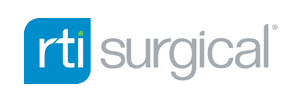
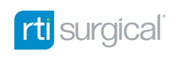

Benefit from Our Experience.
Profit from Our Insight.
Tamarack’s expertise is representing business owners who want to realize the value they have built.
What sets us apart is the combination of our many years of merger and acquisition execution experience with the insight of our industry partners.
Transaction Team
With extensive careers in investment banking, venture capital and financial services, Michael Kessler, Larry Gamst and J.D. Blank recognized the need for a new and better approach to sell-side advisory services. Together, they combine their own expertise with real business insights of owners and operators.
Providing entrepreneurs and small business owners a more valuable sell-side advisory service.


Michael’s investment banking career began at New York-based Smith Barney in 1985. In 1992, Michael moved to Minneapolis to join the partners of Wessels, Arnold & Henderson, an institutional investment banking firm serving high growth / emerging market companies. During his career, he has specialized in healthcare, technology and industrials; underwriting IPOs; raising private capital; and advising on mergers and acquisitions. For the past 15 years, he has focused exclusively on advising private business owners in mergers and acquisitions. He has sat on several charitable boards, including the United Health Foundation and Children’s Cancer Research Fund.
Michael married Kathy in 1990 and they have two children: one in New York City and one in Montreal. Michael loves a fine restaurant and a good golf course but, mostly, a family reunion. He is a graduate of St. John’s College Annapolis and received his MBA from Columbia University. He served active duty in the Marine Corps in the late 70’s.
Larry led DS&B, a Twin Cities-based financial and tax advisory firm, for nearly 4 decades and grew the company significantly under his leadership. During this time, Larry has been a trusted advisor to leaders and owners of public and private companies and to high-net-worth individuals, assisting with strategic planning, operations, financing, succession, and mergers & acquisitions. He and a small team of investors also acquired or invested in numerous private companies. He has served on the board of several for-profit and non-profit entities, including the Boys and Girls Clubs of St. Paul, United Hospital Foundation, Kowalski 4 Kids and H2O Innovation.
Larry is an accomplished guitarist and musician and actively performs at informal venues. He is married to his wife Antonella and they have a son, daughter and grandchild in Minneapolis. He is a graduate of the University of Minnesota and served active duty in the Marine Corps in the 70’s.
Prior to joining Tamarack Partners in 2019, J.D. was the Managing Director of Treehouse Health, a Minneapolis-based healthcare venture capital firm and incubator. In this role, he was responsible for sourcing, evaluating and executing investments in seed, venture and growth- stage companies in the healthcare IT & services and medical technology sectors of healthcare. In addition to working alongside of and advising portfolio companies, he developed and managed a variety of partnerships with large, corporate partners and professional service providers. J.D. has served on the board of multiple organizations and currently serves on the board of directors at the Bakken Museum.
J.D. has lived in Minnesota for most of his life and moved back shortly after college. Outside of work, he likes to spend his time on the golf course, the lake, or traveling somewhere new. J.D. is a graduate of Miami University (OH) and received his MBA from the University of Minnesota.
Business Sector Focus
Tamarack provides sell-side advisory representation in the following business sectors. By teaming with Industry Partners in these fields, our team offers enhanced strategic insight to our clients.
Healthcare Devices, Software & Services
Devices, Digital & HIT
Outsourced Services
Physician Groups / Other Providers
Manufacturing & Industrial
Niche Manufacturing
Commercial Services
Supply Chain and Logistics
Retail & Consumer Services
Retail Technology Solutions
eCommerce / Merchandising
Consumer Home Services
Performance Marketing & Digital Media
Digital Channel/Media
Content Creative/Production
Martech Solutions
Foodservice & Distribution
Manufacturing/Processing
Last Mile Distribution
Consumption
Connected Technology
Tech-enabled Services
Software as a Service
IoT/AI/ML
Industry Partners
Our Industry Partners include successful operating executives of Fortune 500 companies, as well as founders and entrepreneurs who have built and sold businesses in your industry. Click the profiles below to learn more about each of our Industry Partners.

Jim Bullock
Healthcare Devices, Software & Services
Tom Burke
Healthcare Devices, Software & Services
Doug Castek
Manufacturing & Industrial
John Grant
Manufacturing & Industrial
Dean Jones
Connected Technology
Scott Kulstad
Healthcare Devices, Software & Services
Rachael Marret
Performance Marketing & Digital Media
Paul Mortell
Manufacturing & Industrial
Scott Nelson
Connected Technology
Paula Rosenblum
Retail & Consumer Services
Douglass Smith
Connected Technology
Tom Vanderheyden
Healthcare Devices, Software & Services
Jim Bullock
Medical Devices
Jim is a medical devices and software industry veteran with over 40 years of experience. He has served as CEO of several venture capital-backed enterprises, including Endocardial Solutions, Atritech, Inc. and Zyga Technology. His career includes sales and marketing for American Hospital Supply, Baxter and other large medical device companies. Jim took Endocardial public in 1997 and sold it to St. Jude Medical in 2005. Later, he served as President and CEO of Atritech, Inc., which he sold to Boston Scientific in 2001. He most recently ran Zyga Technology, which was sold to RTI Surgical.
Tom Burke
Pharmaceutical and
Related Outsource Services
Tom is a 30-year veteran of Upsher-Smith, where his roles included EVP of Commercial Operations and COO. During his tenure, Upsher-Smith completed the largest acquisition in its history when it purchased Proximagen, a biotechnology company with a pipeline in various stages of development across multiple therapeutic areas. Tom’s career also includes CEO of Hennepin Life Sciences and Co-founder and CEO of Vail Scientific. He currently serves as an advisor and board member to several biotech, pharma and diagnostic companies.
Doug Castek
Supply Chain & Logistics
Doug is an Operations/Supply Chain Executive with operational expertise in Supply Chain Consulting, as a VP of Sales in the Technology Industry, Corporate Supply Chain Management, and SaaS Customer Success. His career began as an Industrial Engineer for an aircraft engine manufacturer. Later, he became Senior Manager for PWC and was one of the nine equity Partners that led Andersen Consulting’s (Accenture) Logistics Strategy Practice. He has also been a VP of Procurement for Churchill Downs, Inc. and a Senior Executive for Transplace, a 3PL. Doug now operates his own consulting firm, DMC Consulting.
Barry Friends
Foodservice Processing, Distribution & Consumption
Barry is a food industry veteran and thought leader with over 35 years of experience spanning strategy, operations, M&A, labor relations, supply chain, process innovation, and consulting. His career includes senior roles at Technomic, Reinhart Foodservice, US Foodservice, Sysco Food Services, Willow Run Foods and Sky Bros, Inc. In 2017, Barry co-founded Pentallect, Inc., where he is currently a Partner. Pentallect offers business and marketing consulting services for the foodservice, retail food, and non-traditional food and beverage channels.
John Grant
Advanced Materials, Manufacturing, Water Purification
John is an accomplished business development executive with over 30 years of experience in multiple roles at 3M spanning industrial, specialty material and medical markets. He has global senior management experience with substantial expertise in advanced strategy development, acquisitions, divestitures, restructurings and management of minority investments and JVs, including advisory board and BOD experience. John holds a PhD from Northwestern University and an MBA from the University of Minnesota. He currently serves as an advisor to several private companies.
Dean Jones
Technology Enabled Services
Dean is a business process solutions expert who co-founded PowerObjects in 1993 as a business technology consulting company that offered service, support, education and add-ons for Microsoft Dynamics CRM. Over its 20+ years as a private enterprise, the company grew to more than $40 million in revenues under Dean’s leadership. During that period, PowerObjects was recognized as the Microsoft Dynamics CRM Worldwide Partner of the Year in 2012 and 2013 and was ranked among small companies in the Star Tribune’s Top Workplaces. In 2015, Dean sold PowerObjects to HCL Technologies for $46 million.
Scott Kulstad
Physician Group Practice & Home Medical Equipment
Scott is a former senior executive of M Health Fairview, a 12-hospital academic health system with over 55 primary care clinics, more than 100 specialties and a network of 5,000+ physicians. Prior to that, Scott worked in Deloitte’s healthcare consulting practice. His expertise includes JVs, M&A, strategic planning, and significant valuation and regulatory experience. Scott is currently President and CEO of Tripartite Consulting and serves the University of St. Thomas as an Executive Fellow in the Opus College of Business Healthcare MBA program.
Rachael Marret
Performance Marketing & Digital Media
Rachael works at the intersection of marketing and technology, bringing global experience both as a corporate marketing leader and a veteran of digital agency management. Her career includes senior roles at McCann Worldgroup agencies serving global brands in CPG, retail, financial, healthcare and technology. She has also held marketing leadership positions at Carlson Rezidor Hotel Group and Marriott Worldwide. In 2015, Rachael founded Vitamin D Consulting, where she is currently Principal Owner.
Paul Mortell
Specialty Manufacturing
Paul is a manufacturing executive who has applied his expertise in a variety of fields. His career began at Advance Circuits, which grew from $3 million to over $92 million in sales during his 8-year tenure. Paul next co-founded and spent 12 years growing Tycom Corp from $0 to $96M. He also co-authored US Patents for robotic assembly and automated inspection equipment before selling Tycom to Kyocera in 2001. Paul later co-founded and grew Cirus Controls before selling it to Certified Power Systems in 2016. Paul currently sits on the Board of Governors of the Engineering School at the University of St. Thomas.
Scott Nelson
Controls & Connected Solutions
Scott began his career with Honeywell in 1988 serving as a Scientist, Technology Group Leader and Home Vision Director in Home and Building Controls until 2000. From 2000 until 2017, he held CTO roles at Logic PD and SkyWater Technology Foundry, where notable accomplishments included creating a 135+ person, multi-disciplinary, multi-site innovative product realization organization and leading product to service transformation. Scott joined Digi International as Chief Product Officer in 2017 and led the pivot of its $200M products-centric business to digital services. In 2015, Scott founded Reuleaux Technology where he is currently CEO and CTO.
Paula Rosenblum
Retail Technology Solutions, eCommerce & Merchandising
Paula is Co-founder and Managing Partner at RSR Research and widely recognized as one of the retail industry’s top analysts. Her career includes retail research at RSAG Research, Aberdeen and AMR and over 20 years in CIO and merchandising operational roles at various companies. Paula has been recognized as one of the “Top 50 Retail Technology Influencers” for 6 years running. She has also written a blog on the retail industry for Forbes since 2013 and is frequently quoted in major mainstream publications.
Douglass Smith
Enterprise Hardware & Software
Douglas is an enterprise hardware and software veteran with over 30 years of experience. His career began with Minneapolis-based InaCom, where he served as Product Manager before moving to NYC to open InaCom’s east coast consulting office. Douglas next assumed the role of VP of Sales, Marketing and Development for TCP/IP applications at James River Inc. In 1994, he co-founded Network Instruments, which produced award-winning, affordable network troubleshooting solutions for global customers until its acquisition by private equity firm Thoma Bravo LLC in 2012 and then by JDSU in 2014.
Tom Vanderheyden
Digital Health
Tom is a healthcare industry veteran. During his career, Tom’s significant accomplishments include spearheading the reinvention of BCBS of MN with the launch of Stella Health; serving as CEO of Harken Health, an innovative UnitedHealth Group subsidiary that operated clinics and sold insurance plans to individuals and small businesses; and pioneering UnitedHealth’s first international operation, where he navigated multicultural complexities and built a new BPO corporate operations center in India. Most recently, Tom served as COO of Altais Health, a start-up providing next-generation clinical support tools, technology, and services to physicians and the clinical community.
Transactions
Tamarack’s transaction team and industry partners have significant M&A experience in our business sectors.


Tonka Bay Equity Partners acquired Aero Systems Engineering, Inc., a world wide leader in wind tunnel and jet engine testing facilities.
Close

Atritech, a developer a medical device to close the left atrial appendage in patients with atrial fibrillation, was sold Boston Scientific.
Close


The Burchfield Group, a leader in pharmacy benefit consulting, auditing and health plan compliance services, was acquired by Aon, Inc.
Close
Cirus Controls, a provider of controls and systems for the winter road maintenance industry was acquired by Certified Power, Inc.
Close


Fair Isaac sold its bill review and medical cost containment technology to the workers compensation industry to Mitchell Corporation.
Close

Gentra, a manufacturer of nucleic acid purification reagents and instruments for clinical and clinical research laboratories, was sold to Qiagen.
Close


Livio, a provider of specialized services making house calls low-income and elderly patients covered by Medicaid and Medicare was acquire by BCBS of Minnesota
Close
Medicode, a provider of claims adjudication software and databases for healthcare providers and insurance companies, was sold to UnitedHealthGroup.
Close


Network Instruments grew to a uniquely effective network solution that integrates customer needs and feedback, while raising the benchmark on quality.
ClosePowerObjects, a professional services firm providing service, support, education and add-ons for Microsoft Dynamics CRM was acquired by HCL Technologies.
Close


Sanovia Corporation, a provider of automated decision-making technology health plan pharmaceutical administration, was sold to Health Information Design.
CloseSt. Anthony Publishing, a provider of health information for the coding, reimbursement, and managed care industries, was acquired by UnitedHealth.
Close


Top Tool Company, a manufacturer of complex precision stamped components primarily for medical devices, sold to Cirtec Medical LLC.
Close

Trussbilt LLC, a manufacturer of steel hardware for the corrections market, has been acquired by the New York-based private equity firm, Sentinel Capital Partners.
Close


Zepol, a provider of US import and export competitive intelligence, market research, lead generation, sourcing, and trade compliance, was sold to Datamyne.
Close 

Contact Us
Tamarack Partners
60 S. 6th Street #2625
Minneapolis, MN 55402
612.422.7175 phone
contact@tamarackpartners.net
© Tamarack Business Partners, L.L.C. dba Tamarack Partners